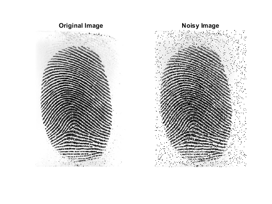
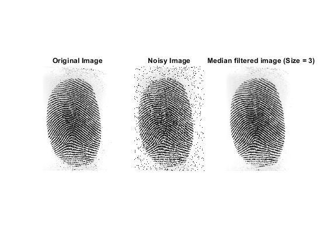
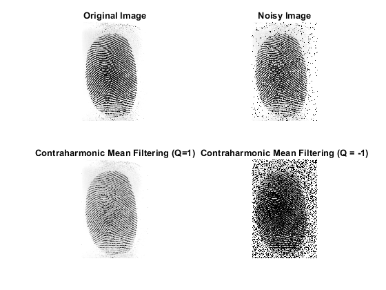

Contents
%NAME: Vatsalya Chaubey %INST: IIT, Bhubaneswar %DATE: 4.10.2020 %CATEGORY: Btech %BRANCH: Electronics and Communication %Roll Number: 17EC01044
Image and Video Processing Assignment - 4
clc; clear all; close all;
Question 1: Salt and Pepper Noise
% The function adds salt and pepper noise to input image function [out] = salt_and_pepper(img, level) % img: Input image on which noise is to be added % level: The level of noise % % out: Output image [row, col] = size(img); noise_function = randi(255, row, col); out = img; % Adding salt and pepper noise out(noise_function<=level) = 0; out(noise_function>=255-level) = 255; end
Salt and Pepper Noise addition example
The salt and pepper noise is added to an image
% Read the input image % Read the input image as a double orig_img = imread('fingerprint.jpg'); orig_img = rgb2gray(orig_img); img = double(orig_img); % Salt and Pepper Noise addition out = salt_and_pepper(img, 10); out = mat2gray(out); figure('Name', 'Salt and Pepper'); subplot(121) imshow(orig_img); title('Original Image'); subplot(122) imshow(out); title('Noisy Image');
Question 2: Median Filter
% The function removes noise using median filter function [out] = median_filter(img, filter_size) % img: Input image on which noise is to be added % filter_size: The size of the median filter % out: Output image [row, col] = size(img); out = img; for i = 1+floor(filter_size/2):row - floor(filter_size/2) for j = 1+floor(filter_size/2):col - floor(filter_size/2) x_start = i - floor(filter_size/2); y_start = j - floor(filter_size/2); x_end = i + floor(filter_size/2); y_end = j + floor(filter_size/2); % Replacing with the median value img_section = img(x_start:x_end, y_start:y_end); out(i,j) = median(img_section, 'all'); end end end
Noise removal using Median filter
This demonstrates removal of salt and pepper noise using a median filter
% Read the input image % Read the input image as a double orig_img = imread('fingerprint.jpg'); orig_img = rgb2gray(orig_img); img = double(orig_img); % Salt and Pepper Noise addition out = salt_and_pepper(img, 10); out = mat2gray(out); % Median filtering out1 = median_filter(out, 3); out1 = mat2gray(out1); figure('Name', 'Median Filtering'); subplot(131) imshow(orig_img); title('Original Image'); subplot(132) imshow(out); title('Noisy Image'); subplot(133) imshow(out1); title('Median filtered image (Size = 3)');
Question 3: Contraharmonic mean filter
% The function removes noise using median filter function [out] = contraharmonic_mean(img, filter_size, Q) % img: Input image on which noise is to be added % filter_size: The size of the median filter % Q: The order of the filter % out: Output image [row, col] = size(img); out = img; for i = 1+floor(filter_size/2):row - floor(filter_size/2) for j = 1+floor(filter_size/2):col - floor(filter_size/2) x_start = i - floor(filter_size/2); y_start = j - floor(filter_size/2); x_end = i + floor(filter_size/2); y_end = j + floor(filter_size/2); img_section = img(x_start:x_end, y_start:y_end); % Finding the contraharmonic mean num = sum(sum(img_section.^(Q+1))); den = sum(sum(img_section.^(Q))); out(i,j) = num / den; end end end
Noise removal using Contraharmonic mean filter
This demonstrates removal of salt and pepper noise using a contraharmonic mean filter
% Read the input image % Read the input image as a double orig_img = imread('fingerprint.jpg'); orig_img = rgb2gray(orig_img); img = double(orig_img); % Salt and Pepper Noise addition out = salt_and_pepper(img, 10); out = mat2gray(out); % Contraharmonic mean filtering with positive Q out1 = contraharmonic_mean(out, 3, 1); out1 = mat2gray(out1); % Contraharmonic mean filtering with negative Q out2 = contraharmonic_mean(out, 3, -1); out2 = mat2gray(out2); figure('Name', 'Contraharmonic Mean Filtering'); subplot(221) imshow(orig_img); title('Original Image'); subplot(222) imshow(out); title('Noisy Image'); subplot(223) imshow(out1); title('Contraharmonic Mean Filtering (Q=1)'); subplot(224) imshow(out2); title('Contraharmonic Mean Filtering (Q = -1)');
Conclusion
This experiment demonstrates how impulse noise (salt and pepper) can be added to an image. We also learnt how such impulse noises can be removed using median and contraharmonic mean filters. Contraharmonic mean filter is very senstitive to the value of Q or the order. The positive value of Q can be used to remove pepper noise and the negative value can be used to remove salt noise, but not both simultaneously.